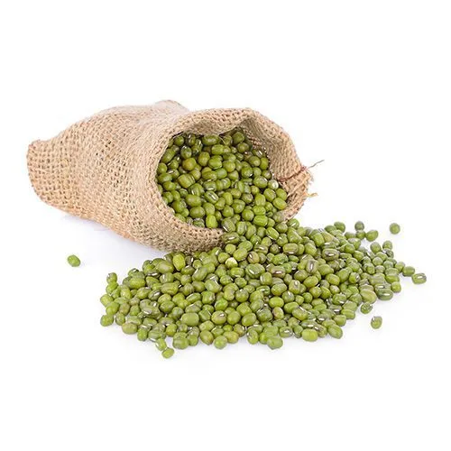
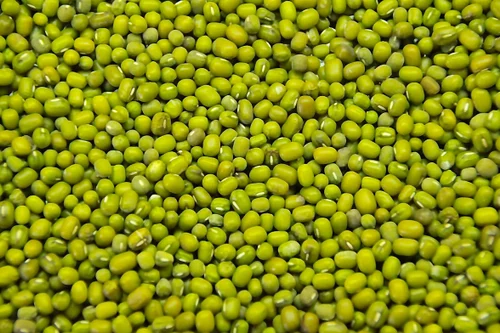
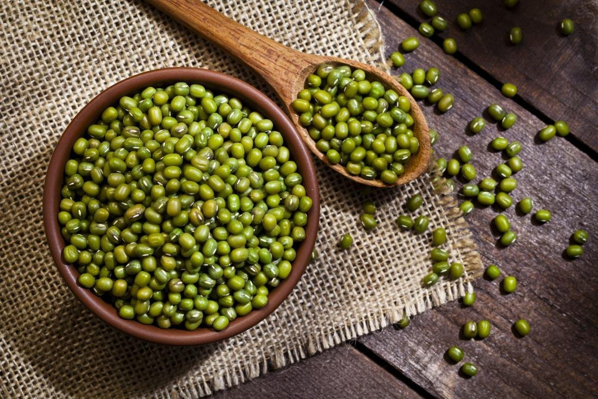

Mung_Beans
Fresh cereals directly from farmers
₹160
MRP (Inclusive of all taxes)
Product Details
- Category: Pulses
- Weight: 100 g
- Quality: Farm Fresh
- Origin: Local Farmers
- Storage: Store in a cool, dry place
- Shelf Life: 6-12 months
About this product
Mung beans (also known as green gram) are highly nutritious pulses rich in protein, fiber, and essential vitamins and minerals. They are widely used in Indian cooking and are valued for their light, easy-to-digest nature and numerous health benefits. Freshly sourced from local farmers, they ensure natural taste, purity, and premium quality.
Health Benefits
- Helps control blood sugar levels
- Supports healthy digestion
- Rich in protein, fiber, and essential nutrients
- Boosts immunity and overall wellness